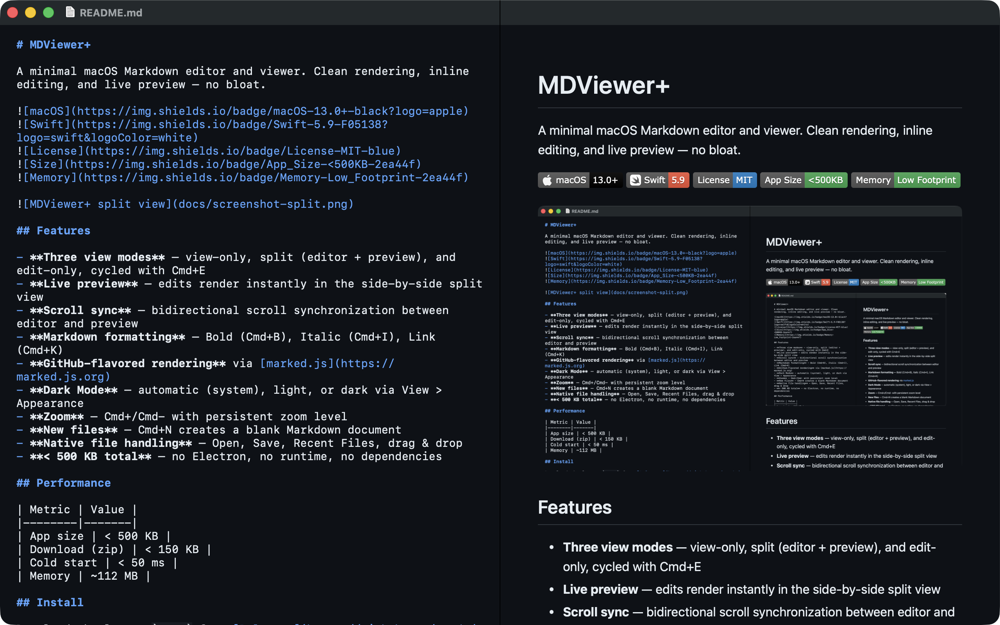

MDViewer+ 2.1.0
A fast native macOS Markdown editor and viewer with live preview, secure local files, and complete offline operation.
macOS 13 or later. Signed and notarized DMGs include SHA-256 files.

One app, two editions
| Lite | Full | |
|---|---|---|
| Best for | Minimum footprint | Most users |
| Shared features | Folder Navigator, Find, Quick Open, secure internal links, native folder watcher, outline, footnotes, alerts, tasks, image zoom, code controls, editing, themes, print | |
| Highlighting | Custom Prism language set | Lazy broad highlight.js |
| YAML metadata | — | Lazy safe card |
| Mermaid | — | Lazy complete offline ESM distribution with pan and zoom |
Both editions have the same app identity. Installing one replaces the other; Lite physically contains no Full renderer assets.
Native workflow
A collapsed-by-default, read-only sidebar lazily browses an explicitly authorized folder across View, Split, and Edit modes.
Cmd F targets the active editor or preview pane, with next and previous commands.
Cmd K searches only the authorized current folder. There is no global index.
Cmd Shift O opens a searchable, transient heading navigator.
Native debounced filesystem events refresh navigation without reloading edited text.
Footnotes, GitHub alerts, accessible tasks, image inspection, and code controls work in preview and print.
Ordinary Full documents do not initialize highlight.js, js-yaml, Mermaid, or svg-pan-zoom.
The local-only navigator excludes hidden items, packages, symbolic links, and unsupported files. It is bounded to 12 levels, 500 direct children, and 5,000 loaded items; filesystem events refresh only folders already loaded. Opening a file never closes a source window with unsaved edits.
Security by construction
MDViewer+ combines App Sandbox, Hardened Runtime, a restrictive CSP, DOMPurify, user-authorized folder leases, canonical path checks, safe URL schemes, separate SVG/highlighter policies, bounded YAML and Mermaid inputs, no remote code, and no runtime downloads.
Key shortcuts
Cmd F Find · Cmd G Next ·
Cmd Shift B Folder Navigator ·
Cmd K Quick Open · Cmd Shift O Outline ·
Cmd E View mode · Cmd Shift K Format link ·
Cmd P Print
Help and support
Choose Help > MDViewer+ Help for the native in-app guide. The custom About window identifies the installed Lite or Full edition, version, and build.